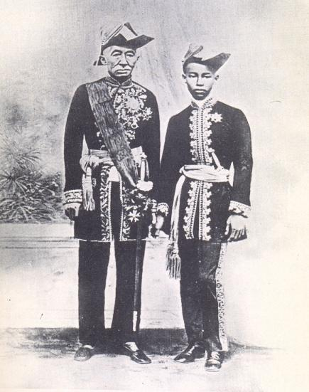

မောင်းကွတ် ဘုရင်ကြီး (King Mongkut, Rama IV) ဆိုတာက ထိုင်းနိုင်ငံရဲ့ နာမည်ကျော် ချူလာလောင်ကောင်း ဘုရင်ကြီးရဲ့ ခမည်းတော်ပါ။
သူနဲ့ ပါတ်သက်ရင် မြန်မာပြည်က အချို့သူတွေလဲ သိတာရှိပါတယ်။ ဒါပေမယ့် မောင်းကွတ် ဘုရင်ကြီးနဲ့ ပါတ်သက်လို့ မြန်မာပြည်က သူတွေ လုံးဝနီးပါးလောက် မသိကြတဲ့ အချက်ကတော့ သူဟာ နက္ခတ်သိပ္ပံ ပညာရှင် တစ်ဦးလဲ ဖြစ်တယ် ဆိုတာပါပဲ။
မောင်းကွတ် ဘုရင်ကြီး ဘုရင် မဖြစ်မီ အိမ်နိမ့်စံ ဘဝမှာ တုန်းက အဲ့ခေတ်က ထုံးစံ အတိုင်း ဘုန်းကြီး ဝတ်နေ ခဲ့ပါတယ်။ ပိဋကတ် တော်တွေကို ကျွမ်းကျွမ်းကျင်ကျင် တတ်မြောက်တယ်လို့ နာမည် ကျော် သလို နက္ခတ်ဗေဒင်လဲ ထူးချွန်လှပါတယ်။ သင်္ချိုင်းမှာလဲ ဓုတင်ဆောင်ပြီး တရားအားထုတ် ခဲ့တယ်လို့ ဆိုကြပါတယ်။
အဲ့သည်လို ဘုန်းကြီး ဝတ်နေတုန်းမှာ ထိုင်းကို သာသနာပြု လာကြတဲ့ ရိုမန် ကက်သလစ် ဘုန်းကြီးတွေနဲ့ ခင်မင် ရင်းနှီး လာပါတယ်။ ဘာသာရေး ဆိုင်ရာ တရားတွေ ဆွေးနွေးကြရာကနေ အဲ့သည် ခရစ်ယာန် ဘုန်းကြီးတွေ ဆီကနေ လက်တင်စာ၊ အင်္ဂလိပ်စာနဲ့ ခေတ်သစ် အနောက်တိုင်း နက္ခတ်နဲ့ သင်္ချာ ပညာတွေကို သင်ကြား ခဲ့ပါတယ်။
နောက်ပိုင်း သူနဲ့ တွေ့တဲ့ နိုင်ငံခြား သံသမန် တွေက ဘုရင်ကြီးဟာ အင်္ဂလိပ် စကားပြောတာ အလွန် ကောင်းတယ်လို့ မှတ်တမ်းတင် ကြပါတယ်။
1851 မှာ မောင်းကွတ်ဘုရင်ကြီး ဘုရင် ဖြစ်လာပါတယ်။ ပြောရရင် မင်းတုန်းမင်းထက် ၃ နှစ်တောင် စောပါတယ်။
ဒါပေမယ့် မင်းတုန်းမင်းကြီးက မိဘုရားတွေနဲ့ ပျော်မွေ့နေချိန်မှာ မောင်းကွတ် ဘုရင်ကြီးက ထိုင်းနိုင်ငံကို ပြုပြင် ပြောင်းလဲရေးတွေ စလုပ်နေပါပြီ။
ထိုင်း ပြက္ခဒိန်ကို ပထမဆုံး အနောက်တိုင်း ပြက္ခဒိန်နဲ့ အရင် ပြောင်းပစ်ပါတယ်။ ကမ္ဘာ လုံးတယ်၊ ကမ္ဘာက နေကို ပတ်နေတယ် ဆိုတာတွေကို ထိုင်းကျောင်း တွေမှာ သင်ကြား ပို့ချစေတယ်။ အစိုးရ အရာရှိ တွေရဲ့ သားသမီးတွေကို အနောက်တိုင်းက သာသာနာပြုတွေ ဖွင့်တဲ့ ကျောင်းတွေမှာ တက်ရောက် သင်ကြား စေတယ်။ သူ့သားတော် တွေကို အနောက်တိုင်းက ဆရာတွေ ခေါ်ပြီး ပညာသင် စေတယ်။ အုပ်ချုပ်ရေး စနစ်တွေ ပြုပြင် ပြောင်းလဲတယ်။

ဘုရင် ဖြစ်သည့်တိုင်အောင် နက္ခတ် လေ့လာရေးတွေ ဆက်လုပ်ပါတယ်။ ထိုင်းရဲ့ ပထမဆုံး နက္ခတ်လေ့လာရေး မျှော်စင် ကို စတင်တည်ဆောက်တယ် (သူကြည့်ချင်တာလဲ ပါတာပေါ့)။ မင်းတုန်းမင်းက ကနောင်မင်းကို ရေမြှုပ်ဗုံး မဖောက်ဖို့ ပိတ်ပင်ချိန်မှာ မောင်းကွတ် မင်းကြီးက Calculus သင်္ချာ တွက်ပြီး နေ၊ ဂြိုဟ်၊ လ တွေရဲ့ ပါတ်လမ်းတွေကို တွက်နေတာပါ။
၁၈၆၈ ဩဂုတ် ၈ ရက်မှာ ထိုင်းမှာ နေကြတ်တယ်။ ဒီ နေကြတ်တာကို မောင်းကွတ် ဘုရင်ကြီးက အနောက်တိုင်း သင်္ချာနည်းနဲ့ တွက်ချက်ပြီး လတ်တီတွတ် လောင်ဂျီတွတ် အတိအကျ၊ အချိန်နာရီ အတိအကျနဲ့ ကြိုတင် ဟောကိန်းထုတ်တယ်။
ဒီလို ဟောကိန်းထုတ်တာကို နန်းတော်ထဲက ဝေဒ ပညာရှင်တွေ၊ နန်းတွင်း မူးမတ် တွေက မယုံကြဘူး။ ဒို့ဘုရင်ကြီး ပေါက်သွားပြီပေါ့။ နေကြတ်မှာကို ကြိုတွက်ဖို့ မဖြစ်နိုင်ဘူးလို့ ရှေးရိုးစွဲပြီး ဖင်ပိတ် ငြင်းကြ တာပေါ့ဗျာ။
ဒါနဲ့ နေကြတ်မယ့် ဗဟို ဖြစ်တဲ့ ထိုင်းတောင်ပိုင်း ဟွာဟင်း (အခု နာမည်ကျော် ကမ်းခြေ) တောင်ဖက်နားက ဘုန်းကြီးကျောင်းကို နန်းတွင်းက မူးမတ်တွေရော နိုင်ငံခြား သံတမန် တွေရော ခေါ်သွားတယ်။ နေကြတ်တာ ကြည့်ဖို့ ဆိုပြီး။ ဘုရင်ကြီး ဟောကိန်း ထုတ်တဲ့ အတိုင်းပဲ နာရီ အတိအကျ နေကြတ်တဲ့ အခါ နန်းတွင်းက ရှေးရိုးစွဲတွေ ဟာကနဲ ဖြစ်သွားကြ တာပေါ့။
ပြောရရင် ခင်ဗျားတို့ ကျွန်တော် တို့လို Youtube က ဗီဒီယိုလောက် ကြည့်၊ စာလေး မတောက်တခေါက် ဖတ်ပြီး ဆရာကြီး လုပ်နေတာ မဟုတ်ပဲ တကယ်ကို ပညာရပ်ကို ထဲထဲ ဝင်ဝင် နားလည် တတ်ကျွမ်း ခဲ့တာပါ။
အဲ့တော့ ပြောချင်တာက ၁၉ ရာစု လယ်လောက်က ပိဋကတ် ၃ ပုံကို ပိုင်နိုင်တဲ့ ထိုင်းဘုရင် ကြီးကတောင် ကမ္ဘာလုံးတာ၊ ကမ္ဘာ က နေကို လှည့်နေတာ၊ ကမ္ဘာက သူ့ဝင်ရိုးပေါ် လည်နေတာ တွေကို လက်ခံပြီး ဂြိုဟ်တွေ၊ နေ၊ လ တွေရဲ့ သွားလမ်းတွေကို သင်္ချာ နည်းတွေနဲ့ တွက်ချက် နေခဲ့တဲ့ အချိန်မှာ ၂၁ ရာစုက ကျွန်တော်တို့ တွေက နဲနဲတော့ ကိုယ့် ကျွဲခြေရာ လေးထဲကနေ အပြင်ဖက် ခေါင်းလေး ဖြစ်ဖြစ်တော့ ပြူကြည့် ကြပါဗျာ။
(အခုထိ ကမ္ဘာ ပြားပါတယ်၊ နေက ကမ္ဘာကို လှည့်နေပါတယ် ဆိုပြီး လာလာ မန့်တဲ့ သူတွေ၊ သိပ္ပံ နည်းပညာ တွေနဲ့ တွက်ချက် ရှာဖွေ တွေ့ရှိ မှုတွေကို လက်မခံ နိုင်ပဲ အတင်း ဇွတ်ငြင်း နေသူတွေကို ရည်ရွယ်ပါတယ်။)
Reference: King Mongkut | Wikipedia